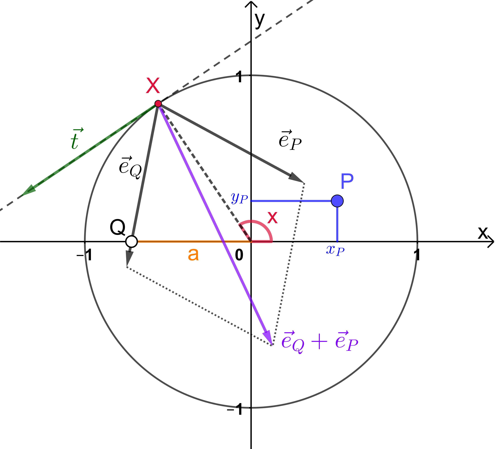
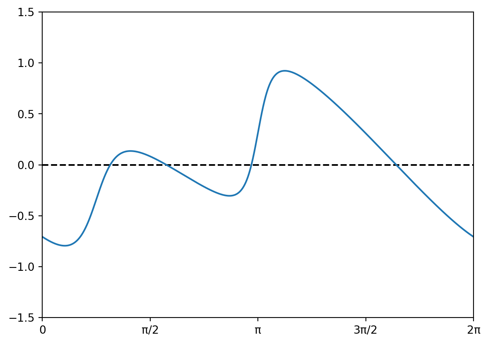
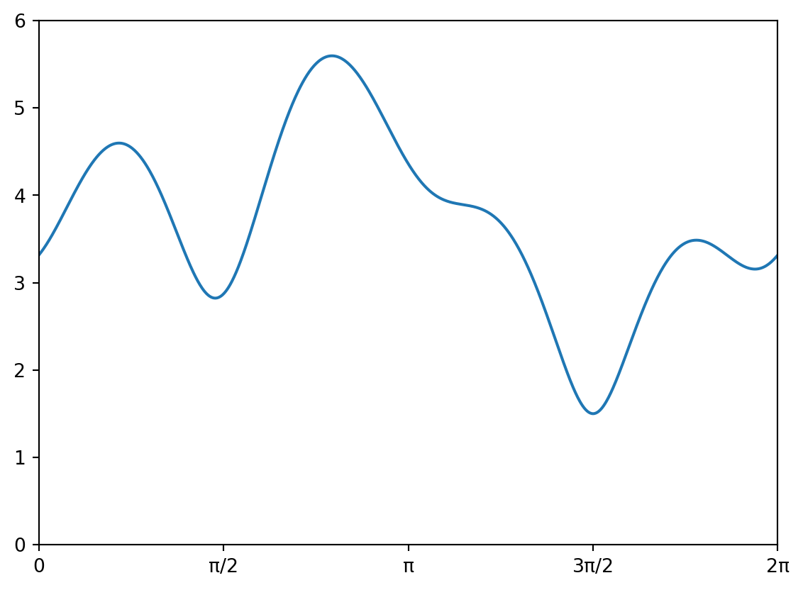

In allen Lehrbüchern über Analysis werden Extremwertaufgaben oder Optimierungsprobleme als zentrale Anwendung von Ableitungen eingeführt. Das folgende Beispiel etwa stammt aus Stocker u. a. (2022) (S. 93):
Von einer Erdölraffinerie \(R\), die an einer von West nach Ost geradlinig verlaufenden Küste liegt, soll eine Pipeline zum Verteilzentrum \(V\) im Landesinnern gebaut werden. \(V\) liegt 16 km östlich und 12 km nördlich von \(R\). Von \(R\) aus soll die Pipeline zuerst ostwärtzs entlang der Küste geführt werden, ab einer geeigneten Stelle dann geradlinig ins Landesinnere nach \(V\). Mit welchen minimalen Baukosten ist zu rechnen, wenn die Verlegungskosten entlang der Küste 15’000 Euro je Kilometer betragen und im Landesinneren 25’000 Euro?
Üblicherweise wird eine solche Aufgabe gelöst, indem zuerst eine Zielfunktion aufgestellt wird, in unserem Fall sind das die Gesamtkosten \(k = k_\textrm{Küste} + k_\textrm{Land}\), die sich aus den Baukosten für den Abschnitt entlang der Küste und den Kosten für die Strecke durch das Landesinnere zusammensetzen. Als nächstes formuliert man Nebenbedingungen, die die beiden Grössen mit einer geeignet gewählten Variablen in Verbindung setzen. Wir wählen \(x\) als die Strecke, die von \(R\) aus entlang der Küste bis zu dem Punkt führt, an dem die Pipeline abgezweigt wird. Dann gilt \(k_\textrm{Küste} = x\cdot 15000\) und mit Pythagoras finden wir \(k_\textrm{Land} = \sqrt{(16-x)^2 + 12^2}\cdot 25000\). Setzen wir dies in die Hauptbedingung ein, so erhalten wir die Zielfunktion \[
k = k(x) = x\cdot 15000 + \sqrt{(16-x)^2 + 12^2}\cdot 25000
\] von der wir das (globale) Minimum suchen. Dazu müssen wir die Funktion ableiten und die Gleichung \(\frac{dk}{dx}=0\) nach \(x\) auflösen.
Aber könnten wir die Aufgabe nicht auch mit Hilfe des Computers lösen?
Übungsaufgabe 1.1 (Kostenfunktion als Programm)
Schreibe eine Python Funktion kosten(x), welche zu einem \(x\in[0,16]\) die gesamten Baukosten \(k\) berechnet, ohne die obige Lösung zu verwenden. Achte auf sinnvolle Variablennamen. Das Programm soll die Baukosten für einen sinnvollen Wert von \(x\) berechnen und ausgeben.
Lösung
Eine mögliche Implementierung könnte so aussehen:
Code
import mathdef kosten(x):# Preise pro Kilometer pKueste =15000 pLand =25000# Distanzen sX = x # Ost-West (x Richtung) d =16- sX sY =12# Nord-Sued (y Richtung) sLand = d**2+ sY**2 sLand = math.sqrt(sLand)#Kosten kKueste = sX * pKueste kLand = sLand * pLandreturn kKueste + kLandx0 =8kGesamt = kosten(x0)print("Mit x =", x0, "betragen die Kosten", kGesamt, "Euro.")
Mit x = 8 betragen die Kosten 480555.1275463989 Euro.
Die Python Funktion kosten(x) liefert die gleichen Werte, wie die Funktion \(k(x)\), die wir oben hergeleitet haben, aber sie ist leichter zu verstehen, da wir eine Schritt für Schritt Anleitung haben, wie die Kosten berechnet werden, wohingegen in der mathematischen Funktionsgleichung alle diese Schritte zu einer Zeile zusammengefasst wurden. Trotzdem haben wir nicht viel gewonnen, wenn wir nicht die Ableitung der Funktion berechnen können. Und genau darum soll es in dieser Lerneinheit gehen.
1.1.1 Unser Ziel: Programme ableiten
Wir möchten Ableitungen von Funktionen berechnen, die durch Programme beschrieben werden, die wie oben einen numerischen Parameter x als Input erhalten und einen numerischen Wert y zurückliefern. Unser Ziel wird es sein, die Programme so zu modifizieren, dass der Funktionsaufruf f(x0) nicht nur den Funktionswert \(f(x_0)\) zurückgibt, sondern auch den Wert der Ableitung \(f'(x_0)\). Wir sind dabei nicht an einer symbolischen Ableitung interessiert, wie das z.B. GeoGebra oder Mathematica machen (s. Kapitel 2.2), sondern nur an einer punktweisen Auswertung. Natürlich wollen wir die Ableitungsfunktion auch nicht von Hand bestimmen. Wir wollen uns aber auch nicht bloss mit einer Annhäerung des Wertes der Ableitung zufrieden geben (s. Kapitel 2.1), sondern den Wert von \(f'(x_0)\) bis auf Maschinengenauigkeit exakt berechnen. In Kapitel 3 werden wir eine Methode kennen lernen, die all dies leistet und dabei die Laufzeit eines Programms nicht wesentlich erhöht. Der Name dieser Methode: Algorithmische Differentiation (AD), obwohl die Namensgebung hier nicht eindeutig ist:
One of the obstacles in this area [of computing derivatives], which involves “symbolic” and “numerical” methods, has been a confusion in terminology […]. There is not even general agreement on the best name for the field, which is frequently referred to as automatic or computational differentiation in the literature. For this book the adjective algorithmic seemed preferable, because much of the material emphasizes algorithmic structure, sometimes glossing over the details and pitfalls of actual implementations. (Aus dem Vorwort zu Griewank und Walther (2008))
Zuerst wollen wir aber die wichtigsten Ableitungsregeln nochmal zusammenfassen.
1.2 Ableitungen von Funktionen
Wir kennen Ableitungen von Funktionen \(f: \mathbb{R}\rightarrow\mathbb{R}\) aus dem Mathematikunterricht. Sie geben uns darüber Auskunft, wie gross die Steigung der Tangente in einem bestimmten Punkt des Funktionsgraphen ist. Die Tangente stellt dabei die beste lineare Annäherung an den Funktionsgraph dar. Ableitungen beschreiben auch die lokale Änderungsrate der Funktion. Ableitungen erlauben es uns ausserdem, die Extrema und Wendepunkte einer Funktion zu bestimmen.
Die folgende Tabelle fasst die bekannten Ableitungen der Grundfunktionen zusammen.
Tabelle 1.1: Ableitungen der Grundfunktionen
\(f(x)\)
\(f'(x)\)
\(f(x)\)
\(f'(x)\)
\(x^n\)
\(n \cdot x^{n-1} \quad (n\in\mathbb{R})\)
\(\sqrt{x}\)
\(\frac{1}{2\cdot\sqrt{x}}\)
\(e^x\)
\(e^x\)
\(a^x\)
\(a^x \cdot \ln(a) \quad (a>0, a\ne 1)\)
\(\ln(x)\)
\(\frac{1}{x}\)
\(\log_a(x)\)
\(\frac{1}{x\cdot\ln(a)} \quad (a>0, a\ne 1)\)
\(\sin(x)\)
\(\cos(x)\)
\(\arcsin(x)\)
\(\frac{1}{\sqrt{1-x^2}}\)
\(\cos(x)\)
\(-\sin(x)\)
\(\arccos(x)\)
\(-\frac{1}{\sqrt{1-x^2}}\)
\(\tan(x)\)
\(\frac{1}{\cos^2(x)} = 1 + \tan^2(x)\)
\(\arctan(x)\)
\(\frac{1}{x^2+1}\)
\(\sinh(x)\)
\(\cosh(x)\)
\(\textrm{arsinh}(x)\)
\(\frac{1}{\sqrt{x^2+1}}\)
\(\cosh(x)\)
\(\sinh(x)\)
\(\textrm{arcosh(x)}\)
\(\frac{1}{\sqrt{x^2-1}}\)
\(\tanh(x)\)
\(\frac{1}{\cosh^2(x)} = 1 - \tanh^2(x)\)
\(\textrm{artanh(x)}\)
\(-\frac{1}{x^2-1}\)
Neue Funktionen erhält man, indem man die Grundfunktionen aus Tabelle 1.1 addiert, subtrahiert, multipliziert, dividiert und komponiert, d.h. Verkettungen der Form \((f\circ g)(x) = f(g(x))\) bildet. Um solche Funktionen abzuleiten, brauchen wir die Regeln aus Tabelle 1.2. Mit diesen Regeln sind wir dann schon in der Lage, alle differenzierbaren Funktionen abzuleiten.
An dieser Stelle sei noch angemerkt, dass sich der Begriff der Ableitung sinngemäss auf Funktionen \(f: \mathbb{R}^n \rightarrow\mathbb{R}^m\) verallgemeinern lässt. Eine kurze Beschreibung der Grundidee findet sich in Slater (2022). Weitergehende Informationen findet man z.B. in Arens u. a. (2022) oder in jedem Lehrbuch zur Analysis 2. Wir werden im Kapitel 4 darauf zurück kommen.
1.3 Programme als Funktionen
Programme, die numerische Werte einlesen und numerische Werte ausgeben, können als mathematische Funktionen betrachtet werden. Wir beschränken uns zunächst auf Programme, die nur ein Argument erhalten und nur einen Rückgabewert liefern.
Diese Python-Funktion entspricht der Funktion \(f:\mathbb{R}\rightarrow\mathbb{R} , x \mapsto y=(2+x)(x-3)\) im Sinne der Mathematik. Natürlich kann der Funktionskörper viel komplizierter aufgebaut sein und z.B. Schleifen und Bedingungen enthalten.
Um zu verstehen, wie der Computer einen Ausdruck wie y = (2 + x) * (x - 3) auswertet, ist es hilfreich, ihn als Baum (im Sinne der Graphentheorie) darzustellen. Ausdrucksbäume sind ein Spezialfall von so genannten computational graphs und werden z.B. in Hromkovic u. a. (2021) erklärt.
Abbildung 1.1: Ausdrucksbaum zum Ausdruck y = (2 + x) * (x - 3).
Wir wollen nun unsere Python-Funktion so umschreiben, dass diese Struktur auch im Funktionskörper sichtbar wird. Dazu führen wir drei Hilfsvariablen v0, v1, v2 ein.
def f(x): v0 = x v1 =2+ v0 v2 = v0 -3 y = v1 * v2return y
Konvention
Eine Funktion berechnet aus einem Argument x einen Rückgabewert y über eine Reihe von Hilfsvariablen v, die mit aufsteigenden Indizes versehen sind. Dabei setzen wir am Anfang immer v0 = x.
Übungsaufgabe 1.4 (Funktion in Graph und Programm übersetzen)
Schreibe zur mathematischen Funktion \(y = f(x) = \frac{\ln(x^2 + 1)}{\sqrt{x^2 + 1 + x}}\) den Ausdrucksbaum auf. Übersetze den Ausdruck anschliessend in eine Python-Funktion gemäss der Konvention.
Lösung
Abbildung 1.2: Computational Graph zum Ausdruck y = ln(x^2 + 1) / sqrt(x^2 + 1 + x).
Natürlich hätte man z.B. v3 und v4 auch vertauschen können.
Übungsaufgabe 1.5 (Ein Programm mit einer Schleife)
Betrachte das folgende Programm:
def f(x): v0 = xfor i inrange(2): v0 = v0 **2+1 y = v0return y
Ersetze im Funktionskörper die Schleife durch mehrere Befehle, so dass immer noch der gleiche mathematische Ausdruck berechnet wird und unsere Konvention eingehalten wird. Welche mathematische Funktion wird durch die Python-Funktion berechnet? Was ändert sich, wenn stattdessen for i in range(3) oder for i in range(4) stehen würde?
Lösung
Für jeden Schleifendurchgang benötigen wir eine neue Hilfsvariable. Die Funktion, die dabei entsteht, kann geschrieben werden als \(f(x) = (\ell \circ \ell \circ \ldots \circ \ell)(x)\), wobei \(\ell(x) = x^2 + 1\) ist.
1.4 Numerische Verfahren, die mit Ableitungen arbeiten
Es gibt zahlreiche numerische Verfahren, welche Werte von Ableitungen benötigen. Wir stellen hier exemplarisch zwei von ihnen vor: Das Newtonverfahren zur näherungsweisen Bestimmung von Nullstellen und das Gradient Descent Verfahren zur näherungsweisen Bestimmung von Minimalstellen einer Funktion. Letzteres wird uns an zahlreichen Stellen wieder begegnen.
1.4.1 Das Newtonverfahren zur Berechnung von Nullstellen
In vielen Anwendungen steht man vor der Aufgabe, die Gleichung \(f(x) = 0\) nach \(x\) aufzulösen, d.h. eine Nullstelle \(\bar{x}\) der Funktion zu finden. Oft ist es aber nicht möglich, die Lösung einer solchen Gleichung in geschlossener Form darzustellen. Um dennoch eine Lösung zumindest näherungsweise berechnen zu können, kann man folgendermassen vorgehen:
Wähle einen Startwert \(x_0\), der in der Nähe einer Nullstelle \(\bar{x}\) von \(f\) liegt.
Im Kurvenpunkt \((x_0 | y_0)\) wird die Tangente an die Kurve \(f\) gelegt. Deren Schnittpunkt \(x_1\) mit der \(x\)-Achse liegt in der Regel näher bei \(\bar{x}\) als \(x_0\).
Nun wiederholt man das Verfahren, indem man bei \(x_1\) die Tangente an die Kurve legt, usw. Auf diese Weise erhält man eine Folge von Näherungen \(x_0, x_1, x_2, \ldots\), deren Grenzwert die Nullstelle \(\bar{x}\) ist.
Dieser Algorithmus ist als Newtonverfahren bekannt.
Die Gleichung der Tangente im Punkt \((x_n | y_n) = (x_n | f(x_n))\) ist bekanntlich \(t(x) = f(x_n) + f'(x_n) \cdot (x - x_n)\). Die Nullstelle der Tangente ist der Näherungswert \(x_{n+1}\). Aus \(t(x_{n+1}) = 0\) ergibt sich nun die Iterationsvorschrift des Newtonverfahrens: \[
x_{n+1} = x_n - \frac{f(x_n)}{f'(x_n)}
\tag{1.1}\]
Schreibe ein Programm, das mit Hilfe des Newtonverfahrens (Gleichung 1.1) eine Nullstelle der Funktion \(f(x) = \frac{1}{31} x^3 -\frac{1}{20} x^2 -x + 1\) berechnet. Verwende den Startwert \(x_0 = -2\). Du kannst abbrechen, wenn die Differenz \(|x_{n+1} - x_n|\) kleiner als eine bestimmte Toleranz wird, z.B. kleiner als tol = 1e-6. Wie flexibel ist dein Programm einsetzbar? Überlege dir z.B., wie viele Änderungen du vornehmen müsstest, wenn du die Nullstelle einer anderen Funktion berechnen müsstest.
Lösung
Welche der folgenden Lösungsvorschläge kommt deinem Programm am nächsten?
Das Newtonverfahren wird als main-Funktion (d.h. im Hauptprogramm) ausgeführt. Braucht man jedoch die Nullstelle einer anderen Funktion, dann muss ein neues Programm geschrieben werden. Die Ableitung wurde von Hand berechnet.
from math import fabsdef f(x): y =1/31* x**3-1/20* x**2- x +1return ydef fdot(x): ydot =3/31* x**2-1/10* x -1return ydotx0 =-2tol =1e-6# Erster Schritt berechnenx1 = x0 - f(x0) / fdot(x0)while fabs(x1 - x0) > tol: x0 = x1 x1 = x0 - f(x0) / fdot(x0)print(x1)
5.908619865450271
Das Newtonverfahren wird als main-Funktion (d.h. im Hauptprogramm) ausgeführt, aber die Berechnung von \(f\) und ihrer Ableitung \(f'\) wurde in zwei Funktionen f und fdot ausgelagert. Das macht das Programm übersichtlicher und flexibler. Die Ableitung wurde wieder von Hand berechnet.
from math import fabsdef newton(f, fdot, x0): tol =1e-6# Erster Schritt berechnen x1 = x0 - f(x0) / fdot(x0)while fabs(x1 - x0) > tol: x0 = x1 x1 = x0 - f(x0) / fdot(x0)return x1def f(x): y =1/31* x**3-1/20* x**2- x +1return ydef fdot(x): ydot =3/31* x**2-1/10* x -1return ydotx0 =-2xbar = newton(f, fdot, x0)print(xbar)
5.908619865450271
Das Newtonverfahren wird als eigene Funktion newton(f, fdot, x0) implementiert. Dieser werden die Funktion \(f\) und ihre Ableitung \(f'\), sowie der Startwert \(x_0\) als Argumente übergeben. Sie kann dann im Hauptprogramm aufgerufen werden. Die Ableitung wurde aber immer noch von Hand berechnet.
from math import fabsdef newton(f, x0): tol =1e-6# Erster Schritt berechnen# Ableitung von f an der Stelle x0 annähern h =1e-6 ydot = ( f(x0 + h) - f(x0) ) / h x1 = x0 - f(x0) / ydotwhile fabs(x1 - x0) > tol: x0 = x1 ydot = ( f(x0 + h) - f(x0) ) / h x1 = x0 - f(x0) / ydotreturn x1def f(x): y =1/31* x**3-1/20* x**2- x +1return yx0 =-2xbar = newton(f, x0)print(xbar)
5.90861986545027
Hier wird das Newtonverfahren in einer Funktion implementiert. Die Ableitung wird nicht mehr von Hand berechnet, sondern innerhalb der Funktion mit \(f'(x_0)\approx \frac{f(x_0 + h) - f(x_0)}{h}\) angenähert. Dabei wird einfach h = 1e-6 gesetzt und gehofft, dass der entstehende Rundungsfehler klein genug ist. Beachte aber, dass sich der berechnete Wert von der Ausgabe in den anderen Versionen leicht unterscheidet.
Auch die Version 4 der vorgestellten Lösung ist noch nicht befriedigend. Als wir die Ableitung von Hand berechnet hatten, musste nur die Funktion fdot and der Stelle x0 ausgewertet werden, um den (bis auf Maschinengenauigkeit) exakten Wert von \(f'(x_0)\) zu erhalten. Bei der letzten Methode muss man sich mit einem Näherungswert der Ableitung zufrieden geben. Auch wenn der Wert in diesem Beispiel gut genug war 1, so haben wir doch keine Garantie, dass wir für alle Funktionen einen vernünftigen Wert erhalten. Auf die Probleme, die mit dieser Annäherung von \(f'(x_0)\) auftreten, wird in Kapitel 2.1 näher eingegangen.
1 Das Newton-Verfahren hat die angenehme Eigenschaft, dass kleine Rundungsfehler automatisch ausgeglichen werden. Auf andere numerische Verfahren, die die Ableitung verwenden, trifft dies aber nicht zu.
Beispiel 1.2 (Billard auf einem runden Tisch)
Wir betrachten ein Beispiel aus Gander (2015). Platziere die weisse und die blaue Billardkugel auf dem runden Tisch. Das Ziel ist es, die weisse Kugel so anzustossen, dass sie die blaue Kugel trifft, nachdem sie vorher genau einmal an die Bande gespielt wurde.
Aus Symmetriegründen dürfen wir annehmen, dass der Rand des Billardtisches der Einheitskreis ist und dass die weisse Kugel auf der \(x\)-Achse liegt. Die blaue Kugel habe die Koordinaten \((x_P|y_P)\). Weiter sei \(X\) der Punkt auf dem Einheitskreis, an dem die weisse Kugel abprallt. Wir beschreiben diesen Punkt mit seinen Polarkoordinaten \(X=(\cos(x)|\sin(x))\). Unser Ziel ist es, \(x\) so zu berechnen, dass die weisse Kugel die blaue trifft, nachdem sie bei \(X\) an die Bande gestossen ist. Dabei verhält sie sich so, als ob sie an der Kreistangente in \(X\) reflektiert wird. Der Tangentenvektor im Punkt \(X\) lautet \(\vec{t} = \begin{pmatrix} -\sin(x) \\ \cos(x) \end{pmatrix}\).

Abbildung 1.3: Billard auf einem runden Tisch
Wir betrachten nun die Einheitsvektoren \(\vec{e}_Q\) in Richtung \(\overrightarrow{XQ}\) und \(\vec{e}_P\) in Richtung \(\overrightarrow{XP}\). Wenn die weisse Kugel die blaue treffen soll, dann müssen die Winkel zwischen der Tangente und diesen Vektoren gleich sein. Das ist genau dann der Fall, wenn \(\vec{t}\) senkrecht steht auf \(\vec{e}_Q + \vec{e}_P\). Wir müssen also \(x\) so bestimmen, dass \(\vec{t} \cdot (\vec{e}_Q + \vec{e}_P) = 0\) ist.
Das folgende Programm berechnet das Skalarprodukt der linken Seite dieser Gleichung.
Code
import mathimport matplotlib.pyplot as pltdef f(x):# Parameter a =-0.8# Position von Q = (a|0) px, py =0.5, 0.5# Position von P = (px|py)# Berechnung des Skalarprodukts v0 = x v1 = math.cos(v0) # x-Koordinate von X v2 = math.sin(v0) # y-Koordinate von X v3 = px - v1 # x-Komponente des Vektors XP v4 = py - v2 # y-Komponente des Vektors XP v5 = math.sqrt(v3**2+ v4**2) # Länge des Vektors XP v6 = v3 / v5 # x-Komponente des Einheitsvektors eP v7 = v4 / v5 # y-Komponente des Einheitsvektors eP v8 = a - v1 # x-Komponente des Vektors XQ v9 =-v2 # y-Komponente des Vektors XQ v10 = math.sqrt(v8**2+ v9**2) # Länge des Vektors XQ v11 = v8 / v10 # x-Komponente des Vektors eQ v12 = v9 / v10 # y-Komponente des Vektors eQ y = (v6 + v11) * v2 - (v7 + v12) * v1 # Skalarproduktreturn y # Graph der Funktion f(x) plottenfig = plt.figure()ax = plt.gca()ax.set_xlim((0,2*math.pi))ax.set_ylim((-1.5,1.5))X = [2*math.pi * k /1000for k inrange(1001)]Y = [f(x) for x in X]plt.plot([0, 2*math.pi], [0, 0], 'k--') # x-Achseplt.plot(X,Y)plt.xticks([0, math.pi/2, math.pi, 3*math.pi/2, 2*math.pi], ['0', 'π/2', 'π', '3π/2', '2π'])plt.show()

Abbildung 1.4: Graph des Skalarprodukts als Funktion des Polarwinkels \(x\) des Punktes \(X = (cos(x) | sin(x))\). Die Nullstellen entsprechen den Winkeln, bei denen die weisse Kugel die blaue Kugel trifft, nachdem sie genau einmal an die Bande gespielt wurde.
Wir möchten die Nullstellen der Funktion f(x) mit unserer Funtion newton bestimmmen. Dazu müssen wir jedoch die Ableitung von f berechnen.
1.4.2 Gradient Descent zum Auffinden lokaler Minima
Eine weitere wichtige Aufgabe besteht darin, ein Minimum einer Funktion zu finden. Auch hier wollen wir mit Hilfe der Ableitung eine Folge von Näherungswerten \(x_0, x_1, x_2, \ldots\) finden, deren Grenzwert die \(x\)-Koordinate eines (lokalen) Minimums von \(f\) ist.
Wenn \(f'(x_n)>0\) ist, dann wissen wir, dass die Funktion \(f\) an der Stelle \(x_0\) streng monoton wachsend ist. D.h., dass die Funktionswerte links von \(x_n\) kleiner sind, als an der Stelle \(x_n\). Analog gilt, dass wenn \(f'(x_n)<0\) ist, die Funktion monoton fallend ist und wir uns nach rechts bewegen sollten, um ein Minimum zu finden. In der Nähe eines Minimums ist ausserdem \(|f'(x)|\) sehr klein und wir können entsprechend kleinere Schritte machen, um uns diesem anzunähern. Um also von \(x_n\) zu \(x_{n+1}\) zu kommen, machen wir einen Schritt, der proportional zu \(-f'(x_n)\) ist. Mit dem Proporionalitätsfaktor \(\lambda\in\mathbb{R}\) und einem geeignet gewählten Startwert \(x_0\) erhalten wir die Iterationsvorschrift \[
x_{n+1} = x_n - \lambda\cdot f'(x_n)
\tag{1.2}\]
Übungsaufgabe 1.7 (Eigenschaften der Gradient Descent Methode) Experimentiere mit verschiedenen Funktionen und verschiedenen Schrittweiten \(\lambda\). Was passiert, wenn die Schrittweite zu klein bzw. zu gross gewählt wird? Was passiert, wenn \(f\) an der Stelle \(x_0\) ein lokales Maximum aufweist? Was passiert in der Nähe eines Sattelpunktes?
Lösung
Ist \(\lambda\) zu klein, dann konvergiert das Verfahren nur sehr langsam. Ist \(\lambda\) dagegen zu gross, dann kann es passieren, dass die Iteration zwischen zwei oder mehr Werten hin- und herspringt oder sogar nach \(\pm\infty\) divergiert.
Falls \(x_0\) gerade mit der Stelle eines lokalen Maximums oder eines Sattelpunktes zusammenfällt, gilt auch \(f'(x_0)=0\) und damit auch \(x_n = x_0\) für alle \(n\in\mathbb{N}\). Maxima sind aber labile Gleichgewichtspunkte in dem Sinn, dass sich \(x_n\) von ihnen wegbewegt, wenn \(x_0\) auch nur ein bisschen links oder rechts davon liegt. Ähnlich verhält es sich bei Sattelpunkten. Die Folge konvergiert gegen die Stelle des Sattelpunktes, wenn \(f(x_0)\) grösser als der \(y\)-Wert des Sattelpunktes ist und \(\lambda\) nicht zu gross ist.
Schreibe ein Programm, das mit Hilfe des Gradient Descent Verfahrens (Gleichung 1.2) ein lokales Minimums der Funktion \(f(x) = \frac{1}{16}x^4 - \frac{1}{3}x^3 + \frac{1}{8}x^2 + x + 2\) berechnet. Verwende den Startwert \(x_0 = 1.5\) und die Schrittweite \(\lambda = 0.5\). Du kannst abbrechen, wenn die Differenz \(|x_{n+1} - x_n|\) kleiner als eine bestimmte Toleranz wird, z.B. kleiner als tol = 1e-6. Wie flexibel ist dein Programm einsetzbar? Überlege dir z.B., wie viele Änderungen du vornehmen müsstest, wenn du ein lokales Minimum einer anderen Funktion berechnen müsstest.
Lösung
Welche der folgenden Lösungsvorschläge kommt deinem Programm am nächsten?
Das Gradient Descent Verfahren wird als main-Funktion (d.h. im Hauptprogramm) ausgeführt. Um das Minimum einer anderen Funktion zu bestimmen, muss ein neues Programm geschrieben werden. Die Ableitung wurde von Hand berechnet
from math import fabsdef fdot(x): ydot =1/4* x**3- x**2+1/4* x +1return ydotx0 =1.5lam =0.5tol =1e-6# Erster Schritt berechnenx1 = x0 - lam * fdot(x0)while fabs(x1-x0) > tol: x0 = x1 x1 = x0 - lam * fdot(x0)print(x1)
3.3429230748530196
Das Gradient Descent Verfahren wird als main-Funktion (d.h. im Hauptprogramm) ausgeführt, aber die Berechnung von \(f'\) wurde in die Funktion fdot(x) ausgelagert. Das macht das Programm etwas flexibler. Die Ableitung wurde wieder von Hand berechnet.
from math import fabsdef gradient_descent(fdot, x0, lam): tol =1e-6# Erster Schritt berechnen x1 = x0 - lam * fdot(x0)while fabs(x1-x0) > tol: x0 = x1 x1 = x0 - lam * fdot(x0)return x1def fdot(x): ydot =1/4* x**3- x**2+1/4* x +1return ydotx0 =1.5lam =0.5xmin = gradient_descent(fdot, x0, lam)print(xmin)
3.3429230748530196
Das Gradient Descent Verfahren wird als eigene Funktion gradient_descent(fdot, x0, lam) implementiert. Dieser Funktion werden die Ableitung \(f'\), der Startwert \(x_0\), sowie die Schrittweite \(\lambda\) als Argumente übergeben. Sie kann dann im Hauptprogramm aufgerufen werden. Die Ableitung wurde aber immer noch von Hand berechnet.
from math import fabsdef gradient_descent(f, x0, lam): tol =1e-6# Erster Schritt berechnen# Ableitung an der Stelle x0 annähern h =1e-6 ydot = ( f(x0 + h) - f(x0) ) / h x1 = x0 - lam * ydotwhile fabs(x1-x0) > tol: x0 = x1 ydot = ( f(x0 + h) - f(x0) ) / h x1 = x0 - lam * ydotreturn x1def f(x): y =1/16* x**4-1/3* x**3+1/8* x**2+ x +2return yx0 =1.5lam =0.5xmin = gradient_descent(fdot, x0, lam)print(xmin)
2.535183236464121
Das Gradient Descent Verfahren wird als eigene Funktion gradient_descent(f, x0, lam) implementiert. Dieser Funktion werden die ursprüngliche Funktion \(f\), der Startwert \(x_0\), sowie die Schrittweite \(\lambda\) als Argumente übergeben. Die Ableitung wird nicht mehr von Hand berechnet, sondern durch den Differenzenquotienten \(f'(x_0) \approx \frac{f(x_0 + h) - f(x_0)}{h}\) angenähert. Dabei wird einfach h = 1e-6 gesetzt und gehofft, dass der entstehende Rundungsfehler klein genug ist. Offensichtlich ist diese Annahme jedoch nicht gerechtfertigt.
Die Übungsaufgabe 1.8 verdeutlicht nochmals das Problem, welches wir bereits in Übungsaufgabe 1.6 gesehen haben. Wir müssen für den Algorithmus die Ableitung \(f'\) an mehreren Stellen auswerten. Wir möchten aber die Ableitung einerseits nicht von Hand berechnen und andererseits können wir uns auch nicht mit einer Approximation zufrieden geben.
Wir beschliessen dieses Kapitel mit einer praktischen Anwendung der Gradient Descent Methode.
Beispiel 1.3 (Minimaler Abstand)
Die Punkte \(P\) und \(Q\) bewegen sich auf Ellipsen im Raum. Die Position des Punktes \(P\) zur Zeit \(t\) ist gegeben durch
Der Abstand zwischen den beiden Punkten lässt sich zu jedem Zeitpunkt \(t\) berechnen durch \(d = d(t) = |\overrightarrow{PQ}|\). Das folgende Programm berechnet diese Funktion und zeichnet ihren Graph.
Code
import mathimport matplotlib.pyplot as pltdef d(t): v0 = t v1 =2* math.cos(v0) -1# x-Koordinate von P v2 =1.5* math.sin(v0) # y-Koordinate von P v3 =0# z-Koordinate von P v4 =-3* math.sin(2*v0) # x-Koordinate von Q v5 =2* math.cos(2*v0) +1# y-Koordinate von Q v6 =2* math.sin(2*v0) +1# z-Koordinate von Q y = math.sqrt((v4-v1)**2+ (v5-v2)**2+ (v6-v3)**2)return y# Graph der Funktion d(t) plottenfig = plt.figure()ax = plt.gca()ax.set_xlim((0,2*math.pi))ax.set_ylim((0,6))T = [2*math.pi * k /1000for k inrange(1001)]Y = [d(t) for t in T]plt.plot(T,Y)plt.xticks([0, math.pi/2, math.pi, 3*math.pi/2, 2*math.pi], ['0', 'π/2', 'π', '3π/2', '2π'])plt.show()

Abbildung 1.5: Graph der Abstandsfunktion \(d(t)\).
Wir möchten das Minimum der Funktion \(d(t)\) mit Hilfe der Gradient Descent Methode finden. Dazu müssen wir aber \(d\) ableiten können.
Arens, Tilo, Frank Hettlich, Christian Karpfinger, Ulrich Kockelkorn, Klaus Lichtenegger, und Hellmuth Stachel. 2022. Mathematik. Berlin, Heidelberg: Springer Berlin Heidelberg.
Gander, Walter. 2015. Learning MATLAB: A Problem Solving Approach. 1. Aufl. UNITEXT. Cham, Switzerland: Springer International Publishing.
Griewank, Andreas, und Andrea Walther. 2008. Evaluating Derivatives: Principles and Techniques of Algorithmic Differentiation. 2. Aufl. Other Titles in Applied Mathematics 105. Philadelphia, PA: SIAM. http://bookstore.siam.org/ot105/.
Hromkovic, Juraj, Jarka Arnold, Cédric Donner, Urs Hauser, Matthias Hauswirth, Tobias Kohn, Dennis Komm, David Maletinsky, und Nicole Roth. 2021. INFORMATIK, Programmieren und Robotik: Grundlagen der Informatik für Schweizer Maturitätsschulen. Klett.